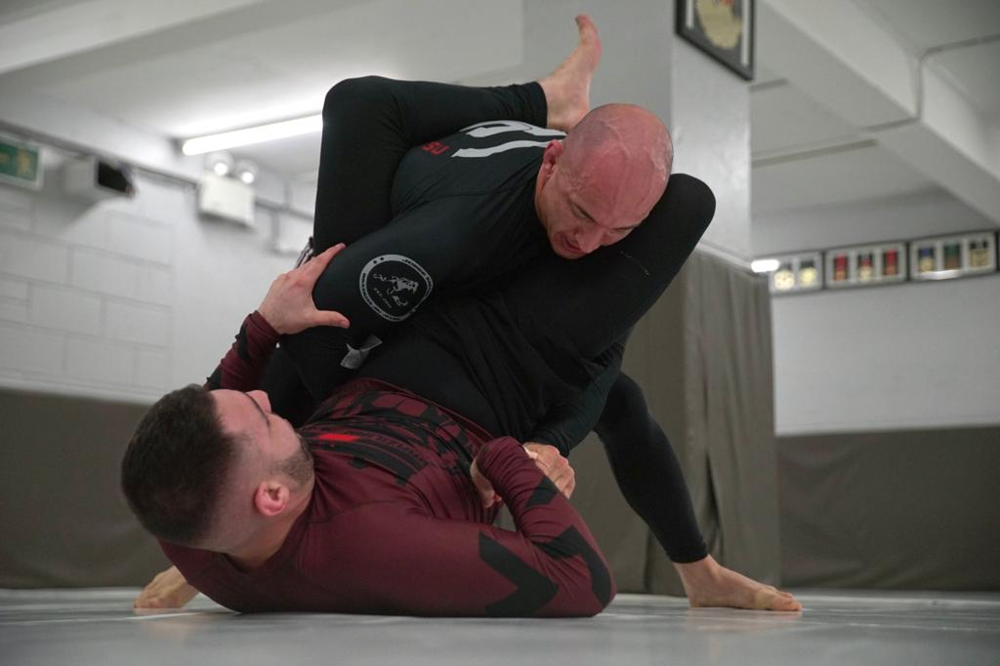

Basic Positions of Jiu Jitsu
Side Control
Side control is a pinning position in Brazilian jiu-jitsu when you're perpendicular to your opponent and are not entangled in their legs. Typically but not always you're chest to chest with your opponent. It is one of the 6 main positions in BJJ and it's where you end up most often after passing the guard.
High Guard / Full Guard
Sometimes referred to as full guard, the closed guard is the typical guard position. In this guard the legs are hooked behind the back of the opponent, preventing them from standing up or moving away. The opponent needs to open the legs up to be able to improve positioning.
Back Control
There are two positions in Brazilian Jiu Jitsu that score four points in most competition rulesets: One of them is the full mount, and the other is back mount, often referred to as back control. In terms of BJJ back control, getting behind someone during grappling exchanges is far easier than staying there for a prolonged period of time. That said, by gaining a basic understanding of WHAT your goals are from back control and HOW to attain them, you’ll become nearly impossible to shake off – making you essentially a human backpack!
Full Mount
For those that have no idea what the mount is, it is a position where one person the defender is lying supine on the ground, and the other person the attacker has their legs straddled around their waist from the top. Both the knees and the feet of the attacker are on the ground, making movement pretty difficult for the defender.
Half-Guard
The half guard, also known by its Portuguese name: meia-guarda, is a grappling position of unknown origin, greatly developed in the early 1990s by Roberto Correa, a well-known Jiu-Jitsu athlete at the time. The definition of grappling guard requires that the bottom player grappler with his back towards the mat makes use of his legs to control the distance between himself and the guard passer grappler on top, the half guard follows that same concept, only in this case the half guard player will have both his legs controlling only one of his opponent’s legs.